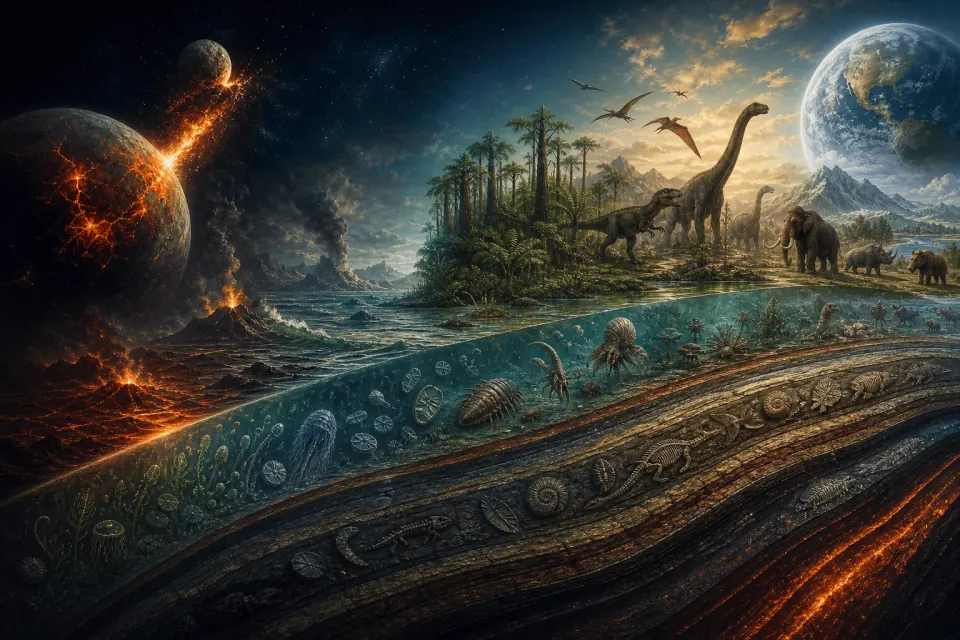

Dossier I Frise géologiqueLe Résumé des Ères
Le roman de la Terre en actes : Précambrien, Paléozoïque, Mésozoïque, Cénozoïque — puis la leçon vertigineuse de la dernière seconde humaine.

 Réalisé parLalie & Ymir
Réalisé parLalie & Ymir